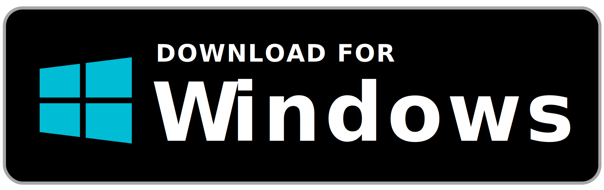

About UQS
The problem and how we solved it
Here in the Philippines, queues in banks, schools, and government agencies could consume a lot of time and energy from people. People complain about waiting in long line. In certain cases, there are some who stay in a queue, while wanting to run some errands. But they can’t do them simultaneously. This is a type of a problem that almost every one of us encounter daily. Hence, we created a solution.
When it comes to software for digital queuing, there's a bunch of them out there, but they are specific to one service. We created a Unified digital queuing software, where at a glance, you can see services, and queue without worrying about staying in the vicinity the whole time because it notifies you when your turn is near.
If you are a student like us or someone who needs to pay bills over the counter and want to manage time efficiently, you will surely benefit using UQS. Now you can attend your classes and meeting or go shopping while queuing online, anytime, anywhere and not worry about missing the line. Our goal is simple and straight forward. It is to create an app that provides efficient service not only for people but also for institutions (by helping them provide better quality of service) and make the long waiting in-line a thing in the past.
Technology used
- Angular
- Angular Material
- Angular Fire
- Firebase
- Firebase Hosting
- Cloud Firestore
- Cloud Functions
- Flutter
- Android Studio
- Electron Js
© THE UQSTEAM 2020. All Rights Reserved.
Developers
We are a team from Central Philippine University and we love to create and experiment with the new technologies in programming.

Dancedrick Alegroso
Lead Developer | Full Stack

Steven Felizardo
Flutter | Firebase dev
Gaille Cabanggay
Angular | Firebase dev

Carl Palisan
Flutter Lead dev
© THE UQSTEAM 2020. All Rights Reserved.
Getting the Source Code
1.1 Services | Web App [Made with Angular]
Requirements
- Node Js
- Angular Cli
Installing/Running Locally
The app is availble to use online, and you can also run it locally you can skip this step.
- Get the source code here
- Git clone
- Npm install
- ng serve
1.2 Users | Android & Windows App [Flutter and Elecron Js]
Requirements
- Node Js
- Flutter
- Android Studio
Installing/Running Locally
The app is availble to for download Android or Windows, and you can also run it locally you can skip this step
For Flutter
- Get the source code here
- git clone
- install the dependencies by running pub get
- flutter run
1.3 For ElectronJs
- Get the source code here
- git clone
- npm install
- npm run electron-build
- npm run electron
© THE UQSTEAM 2020. All Rights Reserved.
Download Uqs for Windows and Android
You can download the latest compiled build for Windows and Android.
This Latest compiled build is tested with
- Pixel Xl with (Latest Api Available) [For development]
- Google Chrome (80.0.3987.163) [For development]
- Samsung A20s (Android 9) [Build Test]
- Windows 64bit Version 1909 (Build 18363.720) [Build Test]
If you face some problems running or installing the build apps please try running it locally with the source code here
Downloadable files are hosted in Google Drive
© THE UQSTEAM 2020. All Rights Reserved.
Managing Tickets
- Firstly, create an account then log in.
- Using the service Dashboard
- The tickets you see in the dasboard are tickets without a teller. From here you either delete it or just let it queue. See figure.
- Click on the Live Queue on the side navigation. This will open a new tab where the tickets with teller are shown. See figure.
- Click the teller in the side navigation and choose a teller number. Then click next, this will find the next ticket without a teller. See figure.
- Click "Done" if the transaction is done. See figure.
Note: The moment that the ticket has a registered teller, it will automatically show up in the live queue.
Note: Some functions/fetaures may take a while. We are using Cloud Functions and it has a cold start sometimes.
© THE UQSTEAM 2020. All Rights Reserved.
Create Ticket
- Firstly, create an account, then log in.
- Creating the ticket
- Go the the service tab and choose a service you want to queue See figure.
- Click on it. This will show more details about the service. Tap on 'create ticket', a snackbar notifying you 'ticket is created' will show See figure.
- Go to the Tickets tab and you will see all the tickets that you susbcribed with information about when will be your turn. See figure.
- You can click on the ticket. It will show more details and information. From here, you can cancel or just view the ticket information. See figure.
Note: It may take a little bit while to create the ticket. We are using Cloud Functions and it has a cold start sometimes
© THE UQSTEAM 2020. All Rights Reserved.